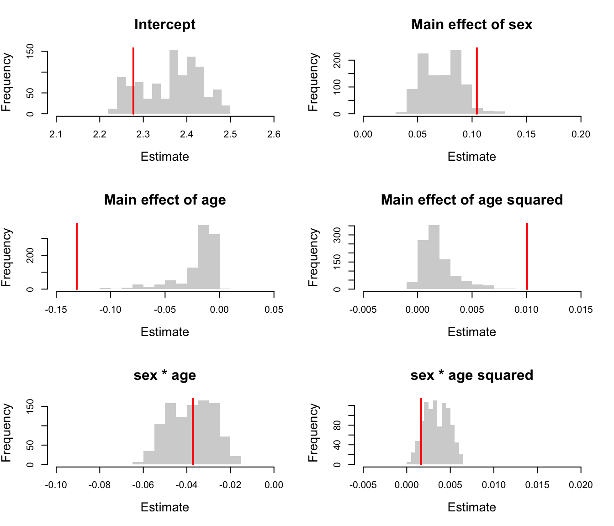
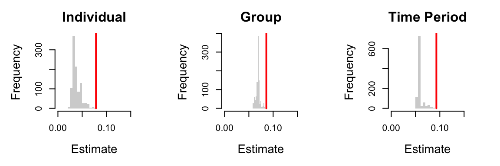
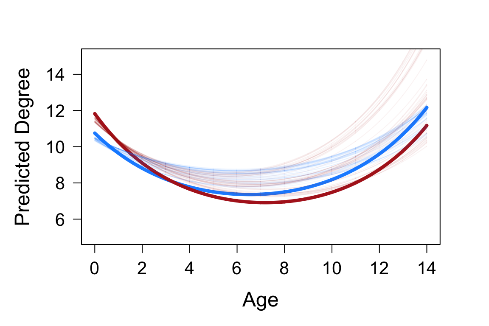

CaseStudyOne.RmdThis case study is based on a long-term CMR dataset from a high-density population of European badgers in the United Kingdom (Delahay et al., 2013; McDonald, Robertson, & Silk, 2018). Badgers in medium to high-density populations live in territorial social groups centred on a main sett (refuge/burrow system), resulting in modular social networks in which they interact frequently with other group members but much less often with individuals from other groups (Weber et al., 2013). The study population is trap-sampled four times per year (in May-June, July-August, September-October and December-January) using baited cage traps deployed at all know active sett locations (see McDonald et al., 2018 for more detail). Badgers give birth in late-winter (the date of birth of all cubs is assumed to be 1st February) and no trapping takes place while females have dependent cubs.
Here we use the co-capture network construction features of CMRnet to examine how the social network position of badgers changes during their lifetime. Individuals that are more strongly connected to those in other groups will be more central to the population network. We expect that the centrality of individuals in social networks peaks when levels of reproductive behaviour as this drives many between-group movements and interactions. Badgers in our study population demonstrate body mass and immune senescence, and so we would expect network centrality to peak in early adulthood, subsequent to maturity but prior to condition beginning to decline. We would also predict that this peak will be higher in males than females, due to differences in social and spatial behaviour.
First we set up our environment.
The data we use here is not documented in the package, but can be accessed to recreate this analyses by using CMRnet:::capturesData and CMRnet:::individualData. The data is on …
# look at dimensions of data str(captures) #> 'data.frame': 14461 obs. of 6 variables: #> $ tattoo : chr "Y001" "Y002" "G020" "B031" ... #> $ date : chr "10/06/1981" "10/06/1981" "11/06/1981" "12/06/1981" ... #> $ socg : chr "WEST" "SEPTIC TANK" "SEPTIC TANK" "SEPTIC TANK" ... #> $ sett : chr "WEST" "SEPTIC TANK" "SEPTIC TANK" "SEPTIC TANK" ... #> $ CaptureYear: int 1981 1981 1981 1981 1981 1981 1981 1981 1981 1981 ... #> $ where : chr "SETT" "SETT" "SETT" "SETT" ... str(indivdat) #> 'data.frame': 2975 obs. of 4 variables: #> $ tattoo : chr "001A" "001B" "001E" "001F" ... #> $ age_fc : chr "CUB" "ADULT" "CUB" "ADULT" ... #> $ year_fc: int 2014 2006 2013 2010 2003 2012 2011 2009 2008 2004 ... #> $ sex : chr "FEMALE" "MALE" "FEMALE" "MALE" ...
We then do some data manipulation to fill in data on the age and sex of badgers in the captures data set. We also wrangle the date formats and create a dataframe in the format needed for CMRnet.
# create empty columns for sex and age captures$sex<-rep(NA,nrow(captures)) captures$age<-rep("ADULT",nrow(captures)) # fill in data on the age and sex of badgers in the captures dataset for(i in 1:nrow(captures)){ if(captures$tattoo[i]%in%indivdat$tattoo){ captures$sex[i]<-as.character(indivdat$sex[indivdat$tattoo==as.character(captures$tattoo[i])]) if(substr(captures$date[i],7,10)==indivdat$year_fc[indivdat$tattoo==as.character(captures$tattoo[i])]&(is.na(indivdat$age_fc[indivdat$tattoo==as.character(captures$tattoo[i])])==FALSE)&indivdat$age_fc[indivdat$tattoo==as.character(captures$tattoo[i])]=="CUB"){ captures$age[i]<-"CUB" } if(substr(captures$date[i],7,10)==indivdat$year_fc[indivdat$tattoo==as.character(captures$tattoo[i])]&(is.na(indivdat$age_fc[indivdat$tattoo==as.character(captures$tattoo[i])])==TRUE)){ captures$age[i]<-NA } } } # Convert sex to a factor captures$sex <- as.factor(captures$sex) # Add a date column in correct format captures$date2 <- as.Date(paste0(substr(captures$date,7,10),"-",substr(captures$date,4,5),"-",substr(captures$date,1,2))) # Add year, month and day columns captures$year <- lubridate::year(captures$date2) captures$month <- lubridate::month(captures$date2) captures$day <- lubridate::day(captures$date2) # Create a year of study column captures$year_of_study <- rep(NA,nrow(captures)) for(i in 1:nrow(captures)){ if(captures$month[i]>1){ captures$year_of_study[i]<-as.numeric(captures$year[i])-1985 } if(captures$month[i]==1){ captures$year_of_study[i]<-as.numeric(captures$year[i])-1986 } } # Subset data to only include 30 years - Feb 1986 to Jan 2016 captures2 <- captures[captures$year_of_study>0&captures$year_of_study<31,] # Create a dataframe in the correct format for CMRnet captures3<-data.frame(captures2$tattoo,captures2$socg,rep(NA,nrow(captures2)),rep(NA,nrow(captures2)),captures2$date2) names(captures3)<-c("id","loc","x","y","date") # Assign fake coordinates to locations using there factor ids as they are not used anyway in this analysis captures3$x <- as.numeric(as.factor(captures3$loc)) captures3$y <- as.numeric(as.factor(captures3$loc)) str(captures3) #> 'data.frame': 13241 obs. of 5 variables: #> $ id : chr "N049" "F011" "F013" "F014" ... #> $ loc : chr "WEST" "COLLIERS WOOD" "JUNCTION" "JUNCTION" ... #> $ x : num 38 12 22 22 12 30 30 5 43 1 ... #> $ y : num 38 12 22 22 12 30 30 5 43 1 ... #> $ date: Date, format: "1986-02-10" "1986-02-17" ...
We then calculate network metrics on the observed dataset. The networks calculated are:
In this analysis we use (unweighted) Degree.
# Create list to store results t_net_mets <- list() # Calculate network metrics to use for(i in 1:length(netdats)){ inet<-graph.adjacency(netdats[[i]][[2]][,,1],weighted=NULL,mode="undirected") ind<-vertex_attr(inet)$name tp<-rep(i,length(vertex_attr(inet)$name)) t_net_mets[[i]]<-data.frame(ind,tp) t_net_mets[[i]]$deg<-igraph::degree(inet) t_net_mets[[i]]$eig<-igraph::eigen_centrality(inet)$vector t_net_mets[[i]]$bet<-igraph::betweenness(inet) t_net_mets[[i]]$pr<-igraph::page.rank(inet)$vector } # Collate results net_mets <- do.call("rbind", t_net_mets) # Create overall results dataframe # Add info on age, sex and group id net_mets$group <- rep(NA,nrow(net_mets)) net_mets$sex <- rep(NA,nrow(net_mets)) net_mets$age <- rep(NA,nrow(net_mets)) for(i in 1:nrow(net_mets)){ net_mets$sex[i] <- unique(as.character(captures2$sex[captures2$tattoo == as.character(net_mets$ind[i])])) if(length(indivdat$age_fc[indivdat$tattoo == as.character(net_mets$ind[i])]) > 0){ if(is.na(indivdat$age_fc[indivdat$tattoo == as.character(net_mets$ind[i])]) == FALSE & indivdat$age_fc[indivdat$tattoo == as.character(net_mets$ind[i])] == "CUB"){ net_mets$age[i] <- net_mets$tp[i]-(indivdat$year_fc[indivdat$tattoo == as.character(net_mets$ind[i])]-1985) } } t.gr <- captures3[captures3$id==as.character(net_mets$ind[i]),] t.gr2 <- table(t.gr$loc) if(length(names(which.max(t.gr2))) == 1){ net_mets$group[i] <- names(which.max(t.gr2)) } } #Remove captures with NAs for any of these additional variables net_mets2 <- net_mets[!is.na(net_mets$age),] net_mets2 <- net_mets2[!is.na(net_mets2$sex),] net_mets2 <- net_mets2[!is.na(net_mets2$group),] #And remove individuals with erroneous ages below 0 net_mets2 <- net_mets2[net_mets2$age>-1,] #Create age squared variable net_mets2$agesq <- net_mets2$age^2 #Remove all individuals only recorded once from the analysis net_mets3 <- net_mets2[net_mets2$ind%in%names(which(table(net_mets$ind)>1)),] #Create binary measure of whether individuals have a betweenness or not net_mets3$betbin <- sign(net_mets3$bet)
We now conduct the statistical modelling of the observed dataset. This is done using glmmTMB. We first fit a generalised linear mixed effects model using a negative binomial error distribution. Degree is the response variable. We have fixed effects of sex, age and age squared, and consider interactions between sex and age and sex and age-squared. We have random effects of individual, capture group and network window. We confirm that parameters estimates from a linear mixed-effects model after a log-normal transformation are very similar, and so use these in subsequent analyses (due to computational limitations when using permutation-based methods).
# first model mod_deg2<-glmmTMB(deg~sex*age+sex*I(age^2)+(1|ind)+(1|group)+(1|tp), data=net_mets3[net_mets3$age<11,], family=nbinom2) summary(mod_deg2) #> Family: nbinom2 ( log ) #> Formula: deg ~ sex * age + sex * I(age^2) + (1 | ind) + (1 | group) + #> (1 | tp) #> Data: net_mets3[net_mets3$age < 11, ] #> #> AIC BIC logLik deviance df.resid #> 34586.3 34651.9 -17283.1 34566.3 5223 #> #> Random effects: #> #> Conditional model: #> Groups Name Variance Std.Dev. #> ind (Intercept) 0.07782 0.2790 #> group (Intercept) 0.10059 0.3172 #> tp (Intercept) 0.11862 0.3444 #> Number of obs: 5233, groups: ind, 1376; group, 40; tp, 30 #> #> Overdispersion parameter for nbinom2 family (): 3.8 #> #> Conditional model: #> Estimate Std. Error z value Pr(>|z|) #> (Intercept) 2.3271715 0.0849402 27.398 < 2e-16 *** #> sexMALE 0.0949437 0.0330385 2.874 0.00406 ** #> age -0.1379655 0.0137824 -10.010 < 2e-16 *** #> I(age^2) 0.0102786 0.0017098 6.012 1.84e-09 *** #> sexMALE:age -0.0220759 0.0221562 -0.996 0.31907 #> sexMALE:I(age^2) 0.0005678 0.0029083 0.195 0.84520 #> --- #> Signif. codes: 0 '***' 0.001 '**' 0.01 '*' 0.05 '.' 0.1 ' ' 1 # second model mod_deg2alt<-glmmTMB(log(deg+1)~sex*age+sex*I(age^2)+(1|ind)+(1|group)+(1|tp), data=net_mets3[net_mets3$age<11,], family=gaussian) summary(mod_deg2alt) #> Family: gaussian ( identity ) #> Formula: log(deg + 1) ~ sex * age + sex * I(age^2) + (1 | ind) + (1 | #> group) + (1 | tp) #> Data: net_mets3[net_mets3$age < 11, ] #> #> AIC BIC logLik deviance df.resid #> 10509.3 10574.9 -5244.7 10489.3 5223 #> #> Random effects: #> #> Conditional model: #> Groups Name Variance Std.Dev. #> ind (Intercept) 0.07843 0.2800 #> group (Intercept) 0.08595 0.2932 #> tp (Intercept) 0.09293 0.3048 #> Residual 0.35848 0.5987 #> Number of obs: 5233, groups: ind, 1376; group, 40; tp, 30 #> #> Dispersion estimate for gaussian family (sigma^2): 0.358 #> #> Conditional model: #> Estimate Std. Error z value Pr(>|z|) #> (Intercept) 2.277218 0.077103 29.535 < 2e-16 *** #> sexMALE 0.104395 0.033050 3.159 0.00158 ** #> age -0.131065 0.013589 -9.645 < 2e-16 *** #> I(age^2) 0.010051 0.001664 6.041 1.53e-09 *** #> sexMALE:age -0.037164 0.021645 -1.717 0.08599 . #> sexMALE:I(age^2) 0.001649 0.002810 0.587 0.55726 #> --- #> Signif. codes: 0 '***' 0.001 '**' 0.01 '*' 0.05 '.' 0.1 ' ' 1
We now create permuted datasets. These are randomisations of the dataset to see what a random network would look like.
# First we create a list of matrices to use to restrict the swaps conducted restricts <- list() #Loop to create networks for remaining time periods for(i in seq(1986,2015,1)){ restricts[[i-1985]] <- array(0,dim=c(nrow(netdats[[i-1985]][[2]]),ncol(netdats[[i-1985]][[2]]),1)) rownames(restricts[[i-1985]]) <- rownames(netdats[[i-1985]][[2]]) colnames(restricts[[i-1985]]) <- colnames(netdats[[i-1985]][[2]]) mindate <- paste0(i,"-02-01") maxdate <- paste0(i+1,"-02-01") D <- captures3 names(D) <- c("id","loc","x","y","date") Jdays <- julian(as.Date(D$date),origin=as.Date("1970-01-01")) D <- data.frame(D,Jdays) D <- D[order(D$Jdays, D$loc,D$id),] D$id <- as.factor(D$id) D$loc <- as.factor(D$loc) D$x <- as.numeric(D$x) D$y <- as.numeric(D$y) start <- julian(as.Date(mindate),origin=as.Date("1970-01-01")) end <- julian(as.Date(maxdate),origin=as.Date("1970-01-01")) D2 <- D[which(D$Jdays>=start&D$Jdays<end),] tinds <- rownames(netdats[[i-1985]][[2]]) for(ii in 1:length(tinds)){ tlocs <- D2[D2$id==tinds[ii],]$loc tinds2 <- unique(D2[D2$loc%in%tlocs,]$id) restricts[[i-1985]][rownames(restricts[[i-1985]])%in%tinds2,tinds[ii],1]<-restricts[[i-1985]][tinds[ii],rownames(restricts[[i-1985]])%in%tinds2,1]<-1 } } permuted_nets <- list() for(i in 1:length(netdats)){ permuted_nets[[i]] <- cmrRestrictedNodeswap(cmrnet=netdats[[i]], restrict=restricts[[i]], n.rand=1000, n.burnin=500, n.swaps=40, multi=FALSE) print(paste(i,"done")) }
We can now rebuild the dataframe analysed and refit models for the permuted datasets.
n.rand <- 1000 fixefs <- matrix(NA,nr=n.rand,nc=6) ranefs <- matrix(NA,nr=n.rand,nc=4) for(j in 1:n.rand){ # Create list to store results t_net_mets <- list() # Calculate network metrics to use for(i in 1:length(netdats)){ inet <- graph.adjacency(permuted_nets[[i]][[1]][,,j],weighted=NULL,mode="undirected") ind <- vertex_attr(inet)$name tp <- rep(i,length(vertex_attr(inet)$name)) t_net_mets[[i]] <- data.frame(ind,tp) t_net_mets[[i]]$deg <- igraph::degree(inet) } # Collate results net_mets <- do.call("rbind", t_net_mets) # Create overall results dataframe # Add info on age, sex and group id net_mets$group <- rep(NA,nrow(net_mets)) net_mets$sex <- rep(NA,nrow(net_mets)) net_mets$age <- rep(NA,nrow(net_mets)) for(i in 1:nrow(net_mets)){ net_mets$sex[i] <- unique(as.character(captures2$sex[captures2$tattoo==as.character(net_mets$ind[i])])) if(length(indivdat$age_fc[indivdat$tattoo == as.character(net_mets$ind[i])])>0){ if(is.na(indivdat$age_fc[indivdat$tattoo == as.character(net_mets$ind[i])])== FALSE&indivdat$age_fc[indivdat$tattoo == as.character(net_mets$ind[i])] == "CUB"){ net_mets$age[i] <- net_mets$tp[i]-(indivdat$year_fc[indivdat$tattoo == as.character(net_mets$ind[i])]-1985) } } t.gr <- captures3[captures3$id == as.character(net_mets$ind[i]),] t.gr2 <- table(t.gr$loc) if(length(names(which.max(t.gr2))) == 1){ net_mets$group[i] <- names(which.max(t.gr2)) } } # Remove captures with NAs for any of these additional variables net_mets2 <- net_mets[!is.na(net_mets$age),] net_mets2 <- net_mets2[!is.na(net_mets2$sex),] net_mets2 <- net_mets2[!is.na(net_mets2$group),] # And remove individuals with erroneous ages below 0 net_mets2 <- net_mets2[net_mets2$age>-1,] # Create age squared variable net_mets2$agesq <- net_mets2$age^2 #Remove all individuals only recorded once from the analysis net_mets3 <- net_mets2[net_mets2$ind%in%names(which(table(net_mets$ind)>1)),] tmod <- glmmTMB(log(deg+1)~sex*age+sex*I(age^2)+(1|ind)+(1|group)+(1|tp), data=net_mets3[net_mets3$age<11,], family=gaussian) ranefs[j,] <- c(unlist(summary(tmod)[9]$varcor),summary(mod_deg2alt)[7]$sigma^2) fixefs[j,] <- as.vector(unlist(fixef(tmod)))[1:6] print(paste(j,"done")) }
We now calculate the quantiles of the reference distribution, calculate p values and produce the plots used in the paper
# quantiles of reference distribution quantile(fixefs[,1],c(0.025,0.975)) #> 2.5% 97.5% #> 2.245197 2.478587 quantile(fixefs[,2],c(0.025,0.975)) #> 2.5% 97.5% #> 0.04420932 0.10535789 quantile(fixefs[,3],c(0.025,0.975)) #> 2.5% 97.5% #> -0.077605512 -0.002002808 quantile(fixefs[,4],c(0.025,0.975)) #> 2.5% 97.5% #> -0.000169437 0.006084938 quantile(fixefs[,5],c(0.025,0.975)) #> 2.5% 97.5% #> -0.05608891 -0.02012636 quantile(fixefs[,6],c(0.025,0.975)) #> 2.5% 97.5% #> 0.0009240526 0.0058891721 # p values sum(summary(mod_deg2alt)$coefficients$cond[,1][1]<fixefs[,1])/(n.rand+1) #> [1] 0.8481518 sum(summary(mod_deg2alt)$coefficients$cond[,1][2]<fixefs[,2])/(n.rand+1) #> [1] 0.02697303 sum(summary(mod_deg2alt)$coefficients$cond[,1][3]<fixefs[,3])/(n.rand+1) #> [1] 0.999001 sum(summary(mod_deg2alt)$coefficients$cond[,1][4]<fixefs[,4])/(n.rand+1) #> [1] 0 sum(summary(mod_deg2alt)$coefficients$cond[,1][5]<fixefs[,5])/(n.rand+1) #> [1] 0.5004995 sum(summary(mod_deg2alt)$coefficients$cond[,1][6]<fixefs[,6])/(n.rand+1) #> [1] 0.8981019
# plot of fixed effects par(mfrow=c(3,2)) hist(fixefs[,1],col="light grey",border=NA,xlim=c(2.1,2.6),main="Intercept",xlab="Estimate",cex.lab=1.3,cex.main=1.5) lines(x=rep(fixef(mod_deg2alt)[[1]][1],2),y=c(0,1000),lwd=2,col="red") hist(fixefs[,2],col="light grey",border=NA,xlim=c(0,0.2),main="Main effect of sex",xlab="Estimate",cex.lab=1.3,cex.main=1.5) lines(x=rep(fixef(mod_deg2alt)[[1]][2],2),y=c(0,1000),lwd=2,col="red") hist(fixefs[,3],col="light grey",border=NA,xlim=c(-0.15,0.05),main="Main effect of age",xlab="Estimate",cex.lab=1.3,cex.main=1.5) lines(x=rep(fixef(mod_deg2alt)[[1]][3],2),y=c(0,1000),lwd=2,col="red") hist(fixefs[,4],col="light grey",border=NA,xlim=c(-0.005,0.015),main="Main effect of age squared",xlab="Estimate",cex.lab=1.3,cex.main=1.5) lines(x=rep(fixef(mod_deg2alt)[[1]][4],2),y=c(0,1000),lwd=2,col="red") hist(fixefs[,5],col="light grey",border=NA,xlim=c(-0.1,0),main="sex * age",xlab="Estimate",cex.lab=1.3,cex.main=1.5) lines(x=rep(fixef(mod_deg2alt)[[1]][5],2),y=c(0,1000),lwd=2,col="red") hist(fixefs[,6],col="light grey",border=NA,xlim=c(-0.005,0.02),main="sex * age squared",xlab="Estimate",cex.lab=1.3,cex.main=1.5) lines(x=rep(fixef(mod_deg2alt)[[1]][6],2),y=c(0,1000),lwd=2,col="red")

# plot of random effects par(mfrow=c(1,3),mar=c(5,5,3,3)) hist(ranefs[,1],col="light grey",border=NA,xlim=c(0,0.15),main="Individual",xlab="Estimate",cex.lab=1.3,cex.main=1.5) lines(x=rep(unlist(summary(mod_deg2alt)[9]$varcor)[1],2),y=c(0,1000),lwd=2,col="red") hist(ranefs[,2],col="light grey",border=NA,xlim=c(0,0.15),main="Group",xlab="Estimate",cex.lab=1.3,cex.main=1.5) lines(x=rep(unlist(summary(mod_deg2alt)[9]$varcor)[2],2),y=c(0,1000),lwd=2,col="red") hist(ranefs[,3],col="light grey",border=NA,xlim=c(0,0.15),main="Time Period",xlab="Estimate",cex.lab=1.3,cex.main=1.5) lines(x=rep(unlist(summary(mod_deg2alt)[9]$varcor)[3],2),y=c(0,1000),lwd=2,col="red")

# plot of predicted change in degree with age par(mfrow=c(1,1),mar=c(5,5,3,3)) x<-seq(0,14,0.01) yf<-unlist(fixef(mod_deg2alt))[1]+unlist(fixef(mod_deg2alt))[3]*x+unlist(fixef(mod_deg2alt))[4]*x^2 ym<-unlist(fixef(mod_deg2alt))[1]+unlist(fixef(mod_deg2alt))[2]+(unlist(fixef(mod_deg2alt))[3]+unlist(fixef(mod_deg2alt))[5])*x+(unlist(fixef(mod_deg2alt))[4]+unlist(fixef(mod_deg2alt))[6])*x^2 plot(x,exp(yf)+1,col="dodger blue",type="l",lwd=4,ylab="Predicted Degree",xlab="Age",cex.lab=1.5,cex.axis=1.3,las=1,ylim=c(5,15)) lines(x,exp(ym)+1,col="firebrick",lwd=4) for(i in 1:50){ yf<-fixefs[i,1]+fixefs[i,3]*x+fixefs[i,4]*x^2 ym<-fixefs[i,1]+fixefs[i,2]+(fixefs[i,3]+fixefs[i,5])*x+(fixefs[i,4]+fixefs[i,6])*x^2 lines(x,exp(yf)+1,col=adjustcolor("dodgerblue",0.05)) lines(x,exp(ym)+1,col=adjustcolor("firebrick",0.05)) }
